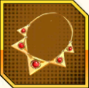

Rồng Thần Siêu Cấp
Tư Chất: 14
Hệ: Kĩ
Kĩ Năng Chiến Binh
Skill
|
Tấn Công Truyền Thuyết
Broly gây Sát thương 1 kẻ địch, 20% Tỷ lệ phong ấn đối thủ, gây 60% Sát thương lên kẻ địch hệ Thủ. |
|
MAX.Tấn Công Truyền Thuyết
Broly gây Sát thương 1 kẻ địch, 20% Tỷ lệ phong ấn đối thủ, gây 60% Sát thương lên kẻ địch hệ Thủ. Nếu phe địch chỉ có 1 người, Sát thương tăng 50%. |
Tất Sát
|
Bắn Phá
Broly gây Sát thương lên toàn bộ kẻ địch, mỗi kẻ địch có 30% Tỷ lệ giảm 300 Nộ, 15% Tỷ lệ Choáng mục tiêu. |
|
MAX.Bắn Phá
Broly gây Sát thương lên toàn bộ kẻ địch, mỗi kẻ địch có 30% Tỷ lệ giảm 300 Nộ, 15% Tỷ lệ Choáng mục tiêu. Bản thân có 30% Tỷ lệ Hồi sinh. |
|
SMAX.Bắn Phá
Broly gây Sát thương lên toàn bộ kẻ địch, mỗi kẻ địch có 30% Tỷ lệ giảm 300 Nộ, 15% Tỷ lệ Choáng mục tiêu. Bản thân có 40% Tỷ lệ hồi sinh và kế thừa Nộ. Khi phe địch chỉ có 1 người, gây Sát thương đơn mục tiêu, giảm 500 Nộ, 35% Tỷ lệ phong ấn mục tiêu. |
Nội tại
|
Cường Hóa Công
Bản thân tăng 7% Công ( lv1 ). |
|
Sức Mạnh SS Truyền Thuyết
Trong chiến đấu, bản thân tăng 30% Tốc độ Hồi Nộ ( lv1 ). |
|
MAX.Sức Mạnh SS Truyền Thuyết
Trong chiến đấu, tất cả đồng minh tăng Tỷ lệ Khống chế, tăng 15% Tỷ lệ Khống chế cho Kefla, Kale. Khi ra trân, nếu có cả Kefla và Kale, tăng 10% Sát thương Tất sát cho cả 3 người ( 2 lượt ). |
Số Mệnh
| Hồn Thanh Long - Cao | Trong tất cả lối chơi, khi bắt đầu chiến đấu tăng 240 Nộ. |
|---|---|
| Duyên Phận | Huyết Mạch Super SAIYAN: Có Bardock , Công tăng 25%. |
| Tiềm Lực Cực Cao: Có Gold Frieza , Công tăng 25%. | |
| Đấu Truyền Thuyết: Có Son Goku ( Ultra ) , Công tăng 25%. | |
| Hồn Vũ Khí |  Hồn Dây Siêu Sức Mạnh |
| Tinh Phách Huy Chương |
 Huy chương
Cực Ác
Huy chương
Cực Ác
|
| Tính Phách Sách |
 Sách
Tà Năng
Sách
Tà Năng
|
Chi Viện
| Kích Hoạt | Bắt đầu từ lượt 1, phát động Chi viện khi có 2 đồng đội tung Tất sát, CD trong 2 lượt. |
|---|---|
| Kĩ Năng | Gây Sát thương lên toàn bộ kẻ địch và gây Khống chế. |
| Hiệu Quả | Trắng: Kích hoạt Skill Chi viện. |
| Lục: Mở ô sách Chi viện số 1. | |
| Lục+1: Khi tấn công, có 30% Tỷ lệ Choáng mục tiêu ( tối đa 2 người ). | |
| Lam: Giới hạn lượt Chi viện tăng lên thành 2. | |
| Lam+1: Phe ta cứ có 1 Chiến binh SS trở lên sẽ tăng 1,5% Sát thương chi viện. | |
| Tím: Mở ô sách Chi viện số 2. | |
| Tím+1: Khi tấn công, tăng 18% Tỷ lệ giảm 300 Nộ ( tối đa 2 người ). | |
| Tím+2: Phe ta cứ có 1 Chiến binh SS trở lên sẽ tăng 3% Sát thương chi viện, có thể tham chiến từ lượt 3 trở đi. | |
| Cam: Mở ô sách Chi viện số 3. | |
| Cam+1: Tăng 36% Tỷ lệ giảm 300 Nộ ( tối đa 2 người ). | |
| Cam+2: Kẻ địch càng đông, Sát thương càng cao, tối đa tăng 100%. | |
| Cam+3: Kẻ địch càng đông, Tỷ lệ Choáng càng cao, tối đa tăng 12%, có thể tham chiến từ lượt 1. |